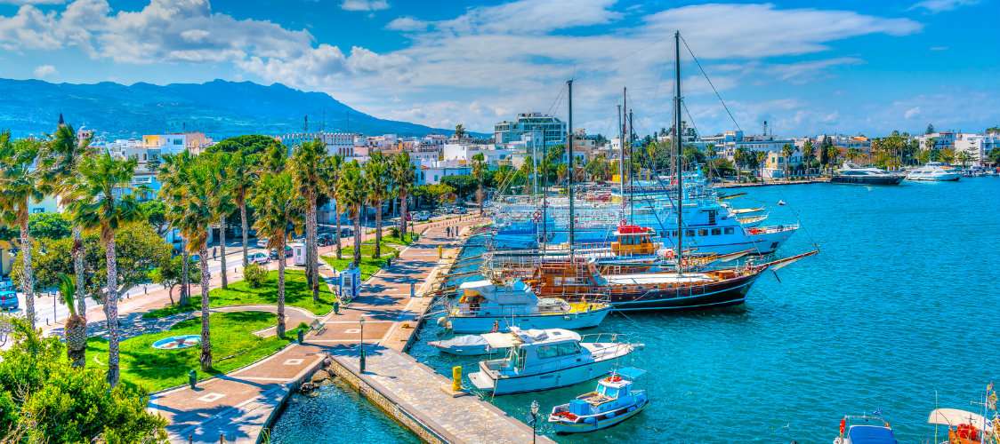

Geschichte
Die Insel wurde durch dorische Siedler aus Epidauros kolonisiert, die möglicherweise den Kult des Heilgottes Asklepios mitbrachten. Seit 546 v. Chr. unter persischer Kontrolle, gehörte Kos ab ca. 450 v. Chr. zum attischen Seebund und fiel 405 an Sparta. Kos war in hellenistischer Zeit der Sitz einer Ärzteschule (siehe auch Empiriker (Ärzteschule)); entgegen älteren Annahmen wurde diese aber nicht von Hippokrates von Kos (ca. 460–370 v. Chr.), dem bekanntesten Arzt des Altertums, geleitet, da zu dessen Zeit noch keine Ärzteschulen im strengen Sinn bestanden, sondern Ärzte ausschließlich im Lehrlingssystem ausgebildet wurden.Ähnliche Bekanntheit erfuhr diese Schule durch den Asklepiadeneid, den die Ärzte angeblich beim Antritt ihres Berufs geschworen haben sollen, aber dies ist eine durch nichts gestützte Vermutung. Von der Mitte des 4. Jahrhunderts bis zur Eroberung durch Alexander dem Großen stand Kos unter der Oberherrschaft der karischen Hekatomniden in Halikarnassos, dem heutigen Bodrum. 366 v. Chr. wurde an der Nordostspitze der Insel die neue, das alte Astypalaia (heute Kefalos) ablösende, Hauptstadt Kos gegründet und wenig später an der Stelle eines Apollon-Haines das Heiligtum des Asklepios erbaut, das von vielen auswärtigen Gästen und Patienten besucht wurde. Um 300 v. Chr. gründete der babylonische Priester und Historiker Berossos auf Kos die erste Astrologieschule der hellenischen Welt, die großes Ansehen erlangte. Kos prägte in griechischer Zeit eigene Münzen, auf denen Asklepios, die Schlange und die Krabbe häufig abgebildet werden.
Kos stellte eine Art von natürlicher Handelsverbindung zwischen der Handelsmacht Rhodos und dem Reich der Ptolemäer dar und geriet in den Einflussbereich beider Mächte. Es versorgte sich weitgehend selbst, exportierte aber Wein und Seide; sein geschützter Hafen spielte eine bedeutende Rolle. Die Dichter Herodas und Theokritos liefern in ihren Dichtungen geistreiche Skizzen des Lebens aller Schichten des städtischen und ländlichen Kos von der Aristokratie bis zu den Sklaven.
Ab dem 2. Jahrhundert v. Chr. war Kos Teil des Römischen Reiches, später des Byzantinischen Reiches. Die Insel wurde 1204 durch die Venezianer und 1262 erneut durch die Byzantiner erobert. Diese traten sie an die Genuesen ab, die sie 1309 an die Johanniter verkauften. 1457 und erneut 1523 wurden die Ritter durch eine osmanische Invasion bedroht. Viele Einwohner wurden versklavt oder verließen die Insel mit den Rittern 1523. Diese wurde von Türken besiedelt. Das Osmanische Reich beherrschte Kos fast 400 Jahre lang, bis die Insel 1912 als Coo in den italienischen Machtbereich überging. Auch Italiener wurden hier angesiedelt.
Im Unternehmen „Eisbär“ am 3. Oktober 1943 besetzte die deutsche Wehrmacht die Insel bis zum Kriegsende. 3.145 italienische und 1.388 britische Soldaten gerieten in Gefangenschaft. Während dieser Operation kam es zum Massaker von Kos an gefangenen italienischen Offizieren. 1947 wurden die Italienischen Ägäis-Inseln, darunter Kos, an Griechenland übergeben.
In der Nacht vom 20. auf den 21. Juli 2017 gegen 1:30 Uhr Ortszeit ereignete sich ein Seebeben der Stärke 6,6 nach der Momenten-Magnituden-Skala, das besonders in der Hauptstadt Kos Zerstörungen bewirkte und zwei Todesopfer sowie mindestens 120 Verletzte forderte. Ein kleinerTsunami überschwemmte den Hafen
Geographische Lage
Kos liegt in der Ost-Ägäis am Eingang des Golfs von Gökova (türkisch Gökova Körfezi). Nördlich der Stadt Kos beträgt die kürzeste Entfernung zur Bodrum-Halbinsel (Bodrum Yarımadası) westlich der türkischen Stadt Bodrum weniger als fünf Kilometer. Die Datça-Halbinsel liegt 15 km südlich. Nachbarinseln sind im Norden Pserimos, vier Kilometer, und Kalymnos, zwölf Kilometer entfernt. Nisyros liegt 12 km südlich und Astypalea etwa 43 km westlich.
Bei einer Fläche von 287,611 km² beträgt die Länge etwas mehr als 42 km und die maximale Breite fast zehn Kilometer. Der Küstenverlauf ist relativ geradlinig ohne nennenswerte Einbuchtungen. Im Osten bildet nahe der Südküste die schmale bis 846 m hohe Bergkette des Dikeos-Massivs (Δίκαιος) die höchste Erhebung der Insel. Diese Bergkette flacht nach Norden hin ab und geht in eine fruchtbare, landwirtschaftlich genutzte Ebene über. Westlich einer 1,6 km schmalen Landenge liegt die Kefalos-Halbinsel (Κέφαλος χερσόνησος) mit dem 426 m hohen Berg Latra (Λάτρα) im äußersten Süden.
Geologisch besteht die Insel aus Schiefer, Kreidekalk und Tertiärschichten, mit mehrere Meter dicken Lagen quartären vulkanischen Tuffs.
Religion
Die Franziskaner verwalten die römisch-katholische Heilig-Kreuz-Kapelle auf der Insel Kos.
